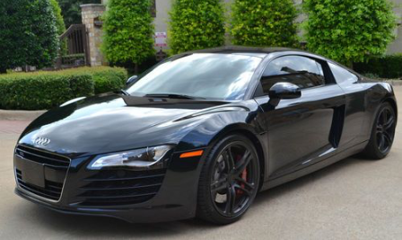
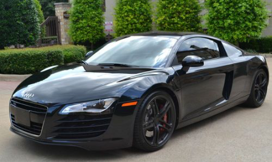

Places I Want to Visit
- China(Zhong guo)
- Shanghai
- Hongkong
- Italy(Italia)
- Rome
- Venice
- Scotland(Alba)
- St. Andrews
- Edinburgh
In Shanghai, I would like to visit the The Bund. The Bund is a picturesque waterfront with the Shanghai skyline in the background. In addition, I would also like to visit the beautiful Yuyuan Garden, which dates back to the mid 16th century.
If I were to go to Hongkong, I would go with my mom's side of my family, where my grandparents would give us a tour of the area they used to live in.
I want to go to Rome, because I think it would be very cool to visit the Colosseum. I woud also like to see the ancient Roman structures and art.
I think that going to Venice, Italy would be cool, because I would want to take a Gondala ride in the Grand Canal river through the city. In addition, just walking through the beautiful city with the river flowing through the middle, would be very calming and enjoyable.
The main reason I would want to go to St. Andrews is because I am a huge golf fan, and there are many iconic golf courses like Kingsbarn, and the Old and New Course. I would have a blast if I went to Scotland with my friends to golf.
In Edinburgh, I would enjoy visiting the old Edinburgh Castle, which was built in the 15th century. I think it would be cool to visit a castle from 600 years ago to see the difference in architecture from now and then.
Class Schedule
| Period | Class | Time |
|---|---|---|
| 1st Period | English III | 8:00- 8:55 |
| 2nd Period | AP Physics | 8:55- 9:45 |
| 3rd Period | Web Development | 9:50- 10:40 |
| 4th Period | Lunch | 10:45- 11:35 |
| 5th Period | Yearbook | 11:40- 12:30 |
| 6th Period | AP Government | 12:35- 1:25 |
| 7th Period | Pre Calculus | 1:30- 2:20 |
| 8th Period | Chinese III | 2:25- 3:15 |